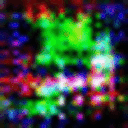
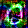

Verson 1

The aim of this project is to see if a computer can generate original art in the style of another artist. Using the neural style transfer technique, I was able to stylize thousands of images and feed that through a AC-GAN. You can click here or my Github to learn more about how the program works.
Above is a GIF of the evolution of the generator. Snapshots were taken every 1000 images asking the generator to predict what the number 0 would look like. It’s clear that this is a significant upgrade from version 0. After using more training data this shows that it is possible to create original art in the style of another artists.
Above is a still taken after 16,000 iterations. Compared to version 0, there is much more structure and a lot more of the color white. It is clear to see that there is a 0 in that picture. There are still many issues however and it is clear that it is very easy to over train the model with diminishing results. Moving forward I would like to optimize the model and look at GANGough as a guide. I also would like to explore making the images larger as the small size limits how much style the images can inherit.